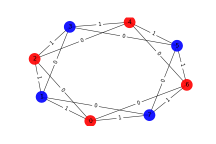
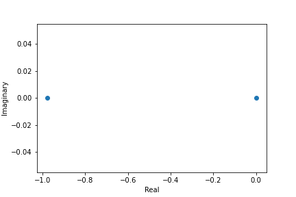
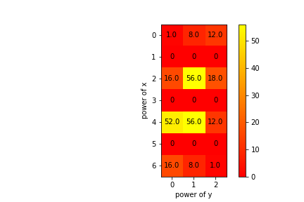

Graph

Number of words associated with this graph: 2
Interlace Polynomial
Polynomial: Poly(43*x**2 + 42*x, x, domain='ZZ')
Roots: [-0.97674419 0. ]

Interlace Polynomial Two Var
Polynomial: Poly(x**6*y**2 + 8*x**6*y + 16*x**6 + 12*x**4*y**2 + 56*x**4*y + 52*x**4 + 18*x**2*y**2 + 56*x**2*y + 16*x**2 + 12*y**2 + 8*y + 1, x, y, domain='ZZ')
Coefficients heat map:
